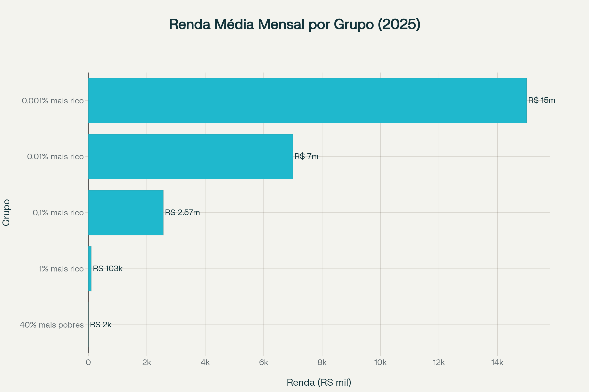

Ao longo dos últimos 50 anos, a concentração de renda no Brasil aumentou significativamente. O 1% mais rico passou a controlar cerca de 70% da riqueza total do país, enquanto os grupos de 0,1%, 0,01% e 0,001% mais ricos ampliaram ainda mais suas participações. A distância em relação aos segmentos mais pobres permanece abismal e tende a crescer, como mostram os infográficos abaixo.
Evolução Histórica da Concentração de Renda (1975–2025)
Linha do tempo mostra a trajetória de crescimento da participação dos 1%, 0,1% e 0,01% mais ricos na riqueza nacional ao longo de 50 anos.
📊 Imagem não encontrada: infografico1.png
Esta imagem deve mostrar a linha do tempo histórica
Evolução da participação na riqueza nacional dos grupos mais ricos (1975-2025)
Comparativo de Renda Média dos Mais Ricos
A disparidade salarial entre os diferentes estratos do topo revela uma pirâmide dentro da pirâmide.
Salto na renda média mensal (2005 → 2025):
1%: R$ 45 mil → R$ 103 mil
0,1%: R$ 500 mil → R$ 2,57 milhões
0,01%: R$ 2,5 milhões → R$ 7 milhões
📊 Imagem não encontrada: infografico2.png
Esta imagem deve mostrar o comparativo de renda média
Renda média mensal por grupo de renda no topo da distribuição
Desigualdade Extrema: Super-ricos vs 40% mais Pobres
Comparação visual entre os grupos mais ricos (1%, 0,1%, 0,01%, 0,001%) e os 40% mais pobres da população.

📊 Imagem não encontrada: infografico_comparacao_ricos_pobres.png
Esta imagem deve mostrar a comparação entre ricos e pobres
Distribuição da riqueza entre os estratos extremos da população brasileira (2025)
Evolução da Desigualdade: 0,001% mais Ricos vs 40% mais Pobres
Duas décadas de trajetórias divergentes: enquanto a renda dos ultra-ricos dispara,
a base da pirâmide enfrenta estagnação ou crescimento marginal.
📊 Imagem não encontrada: infografico_evolucao_ricos_pobres.png
Esta imagem deve mostrar a evolução da desigualdade ao longo do tempo
Trajetória comparativa da renda dos extremos da distribuição (2005-2025)
Dados Estatísticos da Desigualdade no Brasil
Principais indicadores oficiais sobre concentração de renda e riqueza no país.
📊 Indicadores de Concentração de Renda e Riqueza
Métrica
Principais Resultados
Fonte / Ano
Concentração de Renda (1% mais rico)
Detém 27,4% da renda nacional
Ministério da Fazenda (2019)
Concentração de Renda (0,1% mais rico)
Controla 12,4% de toda a renda
Ministério da Fazenda (2019)
Concentração de Riqueza (1% mais rico)
Controla 63% da riqueza do país
Relatório Oxfam
Disparidade de Renda
O 1% mais rico tem renda 39,2 vezes maior que os 40% mais pobres